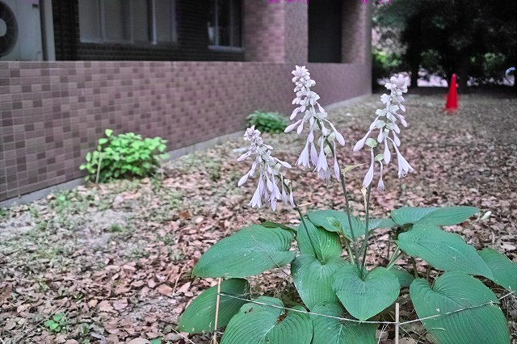
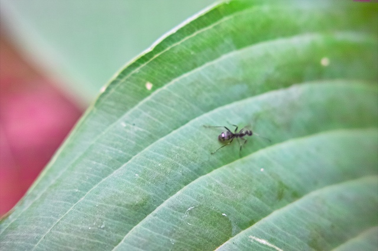

| ・ギボウシと被写界深度 (H24.06.03) | |||
気がつくともう6月です。少し早めですが、ギボウシが咲き始めました。身近にある花も拡大すると違って見えるモノです。やはりよく観察しようとすると、写真計測の知識が必要になります。とくに今回はクローズアップレンズを使うので、花の全体像をくっきり観察するには被写界深度が重要です。また、この被写界深度の特徴を応用した空間計測法がいくつか提案されています。例えば計測研が提案している計測法を用いると、微小粒子の3次元空間分布が計測できます。 |
|||
|

下から順番に咲いていくようです |

花粉を求めて蟻がいます。動きが速い！ | ||
|
F2.8（奥行き前後はぼけて、がくと花粉はくっきり） |
F14（花全体がくっきり） | ||
|
なんとも特徴的な花弁 |
複雑で精妙な3次元構造。不思議 | ||